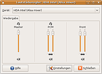

Medion MD 96630
Archivierte Anleitung
Dieser Artikel wurde archiviert, da er - oder Teile daraus - nur noch unter einer älteren Ubuntu-Version nutzbar ist. Diese Anleitung wird vom Wiki-Team weder auf Richtigkeit überprüft noch anderweitig gepflegt. Zusätzlich wurde der Artikel für weitere Änderungen gesperrt.
Zum Verständnis dieses Artikels sind folgende Seiten hilfreich:
Dieser Artikel behandelt die Konfiguration des Medion MD 96630. Die Hardware wird größtenteils automatisch erkannt. Lediglich bei einigen Komponenten wie der Soundkarte, WLAN und dem Biometrischen Fingerabdrucksensor muss nachträglich Hand angelegt werden:
Problembehebung¶
Grafikkarte¶
Da es sich um eine Nvidia-Grafikkarte handelt, kann man die proprietären Treiber wie hier beschrieben installieren und aktivieren. Einfacher geht es mit der Verwaltung eingeschränkter Treiber.
Da es sich um einen Widescreen Bildschirm handelt, sollte man die richtige Auflösung von 1280x800 im Bootsplash eintragen.
Stromversorgung¶
Unter Ubuntu 7.10 bis 9.04 schaltet sich das Notebook nach dem ersten Einschalten sofort wieder aus. Nach dem zweiten Einschalten gibt es keine weiteren Probleme. Ist beim ersten Einschalten das Netzteil angeschlossen, schaltet sich zwar das Notebook nach dem ersten Einschalten aus, geht jedoch nach ca. 5 Sekunden wieder an.

Sound¶
Das Medion MD 96630 hat einen HDA-Intel-Chip mit einem Realtek ALC888 Codec. Es wird also der Treiber snd-hda-intel benötigt.
Ubuntu 8.04 bis 9.04¶
Achtung!
Achtung: Es müssen die korrekten ALSA-Parameter in die Datei /etc/modprobe.d/alsa-base.conf eingefügt werden, damit die Soundkarte erkannt wird. Dazu wie in Soundkarten konfigurieren/HDA beschrieben vorgehen. Die Parameter sind der Tabelle dort zu entnehmen.
Die Lautsprecher funktionieren zwar, sind jedoch zu leise. Der Lautsprecherausgang funktioniert nicht.
Zunächst müssen unter Ubuntu 8.10 die korrekten ALSA-Parameter in die Datei /etc/modprobe.d/alsa-base eingefügt werden. Dazu wie in Soundkarten konfigurieren/HDA beschrieben vorgehen. Die Parameter sind der Tabelle dort zu entnehmen. Unter Ubuntu 8.04 ist dieser Schritt nicht nötig.
Die Lautsprecher kann man lauter machen, indem man mit [3][4][5]
sudo alsactl store
die Konfiguration der Lautstärke in /var/lib/alsa/asound.state ausgeben lässt. Nachdem man value.0 und value.1 von "Front Playback Volume" auf 31 gesetzt hat, lädt man diese mit
sudo alsactl -F -f /var/lib/alsa/asound.state restore
wieder.
WLAN¶
Seit Ubuntu 11.04 funktioniert WLAN direkt nach der Installation.
Im Medion MD 96630 befindet sich ein RT2860-Chipsatz, für den es beim Hersteller  einen Linuxtreiber gibt. Diesen kann man gemäß dieser Anleitung installieren.
einen Linuxtreiber gibt. Diesen kann man gemäß dieser Anleitung installieren.
Biometrischer Fingerabdrucksensor¶
Den biometrischen Fingerabdrucksensor kann man mit fprint nutzen.
Tastenkombinationen¶
| Tastenkombinationen | |
| Tasten | Auswirkung |
| Fn + F1 | Hilfe (wird nicht unterstützt) |
| Fn + F2 | Energie sparen |
| Fn + F3 | Nur Notebook / Nur externer Monitor / Notebook + externer Monitor |
| Fn + F4 | Hintergrundbeleuchtung ausschalten |
| Fn + F5 | Stumm schalten |
| Fn + F7 | WLAN an / aus |
| Fn + ← / Fn + → | Bildschirmhelligkeit erhöhen / verringern |
| Fn + ↑ / Fn + ↓ | Lautstärke erhöhen / verringern |
Webcam¶
Die Foxlink Webcam funktioniert mit Programmen, die V4L2 unterstützen (Cheese, Skype, Ekiga) zwar out-of-the-Box, mit anderen ohne V4L2-Unterstützung (z.B. Camorama) jedoch gar nicht.
BIOS-Update¶
Auch unter Linux sollte man das BIOS aktuell halten. Ein BIOS-Update findet man auf der Medion Support Seite  .
.
Systeminformationen¶
sudo dmidecode -s system-manufacturer MEDION sudo dmidecode -s system-product-name WIM2180 sudo dmidecode -s bios-version V1.0B sudo dmidecode -s system-version 20
Hardware-Info¶
| Medion MD 96630 | |
| Bildschirm | 15.4" WXGA TFT Bildschirm mit 1280x800 Auflösung |
| Grafikkarte | NVidia® GeForce® 9300M G, 128 MByte |
| CPU | Intel® Pentium® Dual-Core Prozessor T2330 1,6 GHz (Intel 965PM Chipsatz, 1MB L2 Cache, FSB 533 MHz) |
| RAM | 3072 MB |
| HD | 160 GB S-ATA, 8 MB Cache |
| CD/DVD | Dual Layer DVD-/-CD Brenner |
| HD | 160 GB S-ATA, 8 MB Cache |
| Größe | 357 x 250 x 35 mm |
| WLAN | IEEE 802.11 n-Draft mit bis zu 300Mbit/s. 802.11 b/g kompatibel (RT2860-Chip) |
| Anschlüsse | HDMI Ausgang, Kopfhörer & Mikrophon, 2 USB-Anschlüsse (USB 2.0), 6-Kanal Audio Out (Analog + S/P-DIF), eSATA Anschluss, 4in 1 Multikartenleser, Express Card Slot 54 |
| Akku | 7800 mAh |
| Sonstiges | LAN, Stereo-Lautsprecher, Intel Corporation 82801H (ICH8 Family) HD Audio Controller (Realtek ALC888-Codec), Touchpad, VGA Webcam mit Array Mikrofon |
- Erstellt mit Inyoka
-
 2004 – 2017 ubuntuusers.de • Einige Rechte vorbehalten
2004 – 2017 ubuntuusers.de • Einige Rechte vorbehalten
Lizenz • Kontakt • Datenschutz • Impressum • Serverstatus -
Serverhousing gespendet von